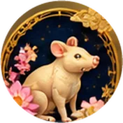

Pig and Tiger make a supportive pair at work today, and traditionally this suits teamwork, friendly negotiation, and sharing the load with people you trust.
Lucky numbers (1 to 5 digits) are for this day only and for fun, not a prediction or betting advice.

Rat
Ordinary Day
Why: No triangle or clash links the Rat to today's Pig. The Rat's Water keeps today's Fire stem in check.
Today moves at an even pace for you, Rat. Nothing dramatic is asked of you, so your quick mind can simply do its everyday work. Notice small details in conversations and routines, because a useful idea may show up in an ordinary moment.
Trade today
Better for counting stock and checking costs than for starting something big.
Best selling hours 07:00–09:00Good trade partner Dragon
Number 2Color blueDirection SoutheastTime 07:00–09:00
Lucky numbers
1 digit2
2 digits23
3 digits273
4 digits2933
5 digits30283
Love · Work · Money
Love
Share a light, funny remark with someone close today. Easy laughter can do more for your bond than a serious talk, and listening well is a kind gift.
Career
Customers may come and go at a regular rhythm. Keep your counter tidy, answer questions patiently, and use your sharp eye to spot which goods people ask about most.
Money
A good day for ordinary habits: write down what you sold and what you spent. Resist the urge to hold back out of worry, and keep prices fair and steady.
Watch Out For
Restlessness may tempt you to change plans halfway. Take a breath and finish what you started before moving on to the next thing.
Today's Advice
Pick one small task you have been postponing and complete it before the afternoon ends.
Why: No triangle or clash links the Ox to today's Pig. Today's Fire stem feeds Earth, the Ox's own element.
A steady, even day for you, Ox. Your patient way of working fits the mood well. Progress may feel slow but real, and keeping to your routine is a better choice today than chasing anything new or sudden.
Trade today
Buy only what you need today and save big orders for a stronger day.
Best selling hours 09:00–11:00Good trade partner Snake
Number 4Color yellowDirection SoutheastTime 09:00–11:00
Lucky numbers
1 digit4
2 digits46
3 digits444
4 digits4516
5 digits41657
Love · Work · Money
Love
Show care through practical acts, like preparing a meal or helping with a chore. Your loved ones traditionally value your dependable presence more than grand words.
Career
Stick with your regular stock and your regular customers. Count your goods carefully, restock what is running low, and let honest service build trust at your own pace.
Money
Keep spending simple and planned today. Buy only what the shop or household truly needs, and note each small cost so the week stays balanced.
Watch Out For
If plans shift a little, try not to dig in too hard. A small bit of flexibility can save you a lot of energy.
Today's Advice
Make a short list in the morning and work through it in order, without rushing.
Why: No triangle or clash links the Tiger to today's Pig. The Tiger's Wood feeds today's Fire stem, so the day asks more of it.
Today is balanced, Tiger, without a big push in any direction. Your confidence is welcome, but it works best when paired with patience. Let events unfold at their own speed and save your boldest moves for another day.
Trade today
A normal trading day — keep your usual prices and routine; no need to gamble on big stock.
Best selling hours 11:00–13:00Good trade partner Horse
Number 4Color orangeDirection SouthTime 11:00–13:00
Lucky numbers
1 digit4
2 digits13
3 digits414
4 digits1418
5 digits41941
Love · Work · Money
Love
Slow down and let your partner or friends finish their thoughts. Your warmth shows best when you give others room to speak.
Career
In buying and selling, let a deal take its time. Greet each customer with a smile, explain your goods clearly, and do not hurry anyone toward a decision.
Money
Keep your spending habits tidy. Compare prices before buying supplies, and think twice about impulse purchases you may not need tomorrow.
Watch Out For
Impatience may rise when others move slowly. Remind yourself that steady people often notice details you might miss.
Today's Advice
Before answering any request today, pause for one slow breath and then respond.
Why: The Rabbit and today's Pig share the Wood triangle. The Rabbit's Wood feeds today's Fire stem, so the day asks more of it.
A pleasant day opens for you, Rabbit. Your gentle manner is noticed and appreciated, and people feel open to cooperation. Traditionally this is a good time to talk things through, mend small misunderstandings, and enjoy the friendly mood around you.
Trade today
Selling goes smoothly; team up with a friend or a neighbouring shop to reach more buyers.
Best selling hours 13:00–15:00Good trade partner Goat
Number 3Color pinkDirection SouthwestTime 13:00–15:00
Lucky numbers
1 digit3
2 digits61
3 digits487
4 digits6921
5 digits36324
Love · Work · Money
Love
A good day to say something kind and sincere. Warm words or a small thoughtful gesture can bring you closer to someone you care about.
Career
Customers may respond well to your courteous style. Offer a friendly greeting, display your goods neatly, and consider discussing a small deal that benefits both sides.
Money
Gentle bargaining tends to go smoothly today. Keep prices fair, set aside a little of what you earn, and enjoy a modest treat without overspending.
Watch Out For
Try not to avoid a needed conversation just to keep the peace. A kind, honest word now can save trouble later.
Today's Advice
Reach out to someone you have been meaning to talk with and suggest working on something together.
Why: No triangle or clash links the Dragon to today's Pig. Today's Fire stem feeds Earth, the Dragon's own element.
An ordinary, even day for you, Dragon. You may not feel the usual spotlight, and that is perfectly fine. Use the quieter hours to refine your plans, tidy loose ends, and let your natural confidence rest on solid preparation.
Trade today
Sales are average; focus on good service, a clean display and correct change.
Best selling hours 23:00–01:00Good trade partner Rat
Number 6Color silverDirection NorthTime 23:00–01:00
Lucky numbers
1 digit6
2 digits17
3 digits701
4 digits1710
5 digits71677
Love · Work · Money
Love
Offer your attention rather than your opinions today. A calm evening with family or a partner can feel more meaningful than any grand plan.
Career
Business moves at a regular pace. Review your stock, follow up with returning customers, and keep your promises on delivery rather than chasing a flashy sale.
Money
Keep an eye on small everyday spending. Choose practical purchases for your work, and be patient if sales feel average.
Watch Out For
Pride may make limits feel annoying. If something moves slower than you like, accept it kindly and carry on.
Today's Advice
Spend a little time organizing your workspace or shop so tomorrow starts smoothly.
Why: The Snake sits opposite today's Pig on the wheel (a clash). Today's stem is Fire, the Snake's own element.
Today asks you to slow down and be gentle with yourself, Snake. It is not a day for big pushes, and that is perfectly fine. Keep to familiar routines, rest your mind when it gets busy, and let small tasks be enough.
Trade today
Not a day for risky deals or selling on credit; keep cash safe and put off big decisions.
Best selling hours 01:00–03:00Good trade partner Ox
Number 9Color yellowDirection NortheastTime 01:00–03:00
Lucky numbers
1 digit9
2 digits92
3 digits942
4 digits8978
5 digits81909
Love · Work · Money
Love
Be patient with those close to you, and with yourself. If words come out sharper than intended, a warm apology and a quiet cup of tea can go a long way.
Career
Keep work simple and familiar. Double-check orders and stock lists, serve regular customers calmly, and leave any big new deals for a calmer day.
Money
Stay with your usual budget today. Put off large purchases or price changes, and keep your records neat so your mind can feel at ease.
Watch Out For
Overthinking may grow louder today. When your mind loops, step away for a short walk instead of trying to solve everything at once.
Today's Advice
Choose one easy, familiar task, finish it calmly, and allow yourself an early rest tonight.
Why: No triangle or clash links the Horse to today's Pig. Today's stem is Fire, the Horse's own element.
Today moves at an even pace for the Horse, with no big surprises in either direction. Your restless spirit may want to gallop, but steady steps suit the day better. Finish what is already in front of you before chasing something new.
Trade today
Better for counting stock and checking costs than for starting something big.
Best selling hours 03:00–05:00Good trade partner Tiger
Number 2Color yellowDirection NortheastTime 03:00–05:00
Lucky numbers
1 digit2
2 digits71
3 digits327
4 digits3828
5 digits28879
Love · Work · Money
Love
Traditionally a quiet day for the heart. Listen fully before you reply, and let a simple, unhurried conversation show someone that you care.
Career
Customers may arrive in a steady trickle rather than a rush. Greet each one warmly, keep your stall or counter tidy, and follow up on earlier orders.
Money
Sales look ordinary, so keep prices steady and avoid sudden discounts. Note your small daily spending and set a little aside if you can.
Watch Out For
Impatience may creep in when things feel slow. Take a breath before rushing a deal or a decision, because slow is fine today.
Today's Advice
Pick one unfinished task this morning and see it through to the end before you start anything new.
Why: The Goat and today's Pig share the Wood triangle. Today's Fire stem feeds Earth, the Goat's own element.
A gentle, bright day for the Goat. Your creativity and kindness are easy for others to notice, and small efforts may be received warmly. Trust your taste and let your caring nature lead the way.
Trade today
A fine day to settle accounts and plan next week's stock.
Best selling hours 05:00–07:00Good trade partner Rabbit
Number 7Color redDirection EastTime 05:00–07:00
Lucky numbers
1 digit7
2 digits72
3 digits728
4 digits7467
5 digits27729
Love · Work · Money
Love
Soft words and thoughtful gestures travel far today. Consider a small heartfelt gift for someone dear, or simply check in on them.
Career
A good day to display goods attractively and speak kindly with buyers. Your eye for presentation may draw people to your stall or shop, and agreements can feel friendly.
Money
Pleasant sales are traditionally likely when you present things well. Keep spending modest, pay what you owe on time, and save a little from today's takings.
Watch Out For
Indecision can slow down a good day. If you are torn between two choices, ask a trusted friend once, then decide gently.
Today's Advice
Rearrange your workspace or shop display so it looks inviting, then offer your best item to the first customer.
Why: No triangle or clash links the Monkey to today's Pig. Today's Fire stem keeps the Monkey's Metal in check.
The Monkey's day is neutral, a pleasant middle road. Your quick mind is useful, but focus matters more than speed today. Choose a couple of worthwhile things and enjoy doing them well rather than juggling everything.
Trade today
Buy only what you need today and save big orders for a stronger day.
Best selling hours 23:00–01:00Good trade partner Rat
Number 4Color blueDirection NorthTime 23:00–01:00
Lucky numbers
1 digit4
2 digits96
3 digits464
4 digits9493
5 digits94294
Love · Work · Money
Love
Keep your humor kind and light. A playful message may brighten someone's afternoon, though listening carefully matters more than being clever.
Career
Trade is likely to run at a normal rhythm. Use your wit to explain products clearly, check your stock list twice, and answer customer questions patiently.
Money
Prices and sales look average. Compare costs before buying supplies, avoid impulse purchases, and keep a simple record of what comes in and goes out.
Watch Out For
A wandering mind could cause small slips, like a wrong count or a forgotten message. Gentle double-checking will help.
Today's Advice
Write a short list of the three most important tasks and finish them in order before you check anything else.
Why: No triangle or clash links the Rooster to today's Pig. Today's Fire stem keeps the Rooster's Metal in check.
An even, orderly day for the Rooster. Nothing dramatic is expected, which suits your careful nature. Pay attention to details and take quiet pride in work done properly, without needing applause.
Trade today
A normal trading day — keep your usual prices and routine; no need to gamble on big stock.
Best selling hours 01:00–03:00Good trade partner Ox
Number 5Color goldDirection NortheastTime 01:00–03:00
Lucky numbers
1 digit5
2 digits74
3 digits888
4 digits8119
5 digits85731
Love · Work · Money
Love
Show care through small acts rather than corrections. A kind word about something someone did well can warm the whole atmosphere.
Career
A good day for tidying records, counting stock, and checking orders. With customers, stay polite and clear, and let your reliability speak for your business.
Money
Sales are steady, not spectacular. Review your receipts, keep prices honest and consistent, and skip spending on things that are merely nice to have.
Watch Out For
Your sharp eye may spot flaws everywhere. Offer feedback gently, so helpful honesty does not land as bluntness.
Today's Advice
Set aside a short quiet time to check your records or stock, and thank one helper for their effort.
Why: No triangle or clash links the Dog to today's Pig. Today's Fire stem feeds Earth, the Dog's own element.
Today asks the Dog for calm and steadiness. The day is ordinary, neither pushing nor holding you back. Your loyalty counts for a lot, and trusting people a little more may make things feel lighter.
Trade today
Sales are average; focus on good service, a clean display and correct change.
Best selling hours 03:00–05:00Good trade partner Tiger
Number 4Color greenDirection NortheastTime 03:00–05:00
Lucky numbers
1 digit4
2 digits43
3 digits434
4 digits9288
5 digits31364
Love · Work · Money
Love
Honest, simple conversation is best. Share a worry kindly instead of keeping it inside, and give loved ones the benefit of the doubt.
Career
Regular customers may matter most today. Keep your promises on delivery and quality, and stay patient with new buyers who ask many questions.
Money
A day for sensible habits. Keep prices fair, settle small debts you owe, and try not to worry over slow moments in sales, because they pass.
Watch Out For
Suspicion of something new may be louder than it needs to be. Ask a few questions, then give it a fair chance.
Today's Advice
Reach out to a trusted friend or longtime customer with a friendly greeting before the day ends.
Why: Today is the Pig's own day. The Pig's Water keeps today's Fire stem in check.
It is your own day, Pig, and warmth follows you easily. Generosity and an easygoing smile may open doors, and others tend to feel comfortable around you. Enjoy it, and share the good mood freely.
Trade today
Customers are easier to win today — try a new product, a promotion or a special price.
Best selling hours 05:00–07:00Good trade partner Rabbit
Number 8Color brownDirection EastTime 05:00–07:00
Lucky numbers
1 digit8
2 digits24
3 digits288
4 digits8272
5 digits55225
Love · Work · Money
Love
A wonderful day to be open-hearted. Share a meal or a kind conversation with someone you treasure, because honest affection comes naturally.
Career
Customers are likely to feel welcome around you, making it a fine day for selling, hospitality, and friendly deals. Offer good service and let your sincerity do the work.
Money
Sales may feel lively thanks to your cheerful manner. Enjoy the day, but keep treats modest and put a portion of today's takings safely aside.
Watch Out For
Being so trusting, you might agree too quickly. Pause to read the details of any deal before you say yes.
Today's Advice
Welcome the first customer or visitor with real warmth, and set aside a small part of today's earnings before treating yourself.
Today is a Pig day, which traditionally brings a relaxed, generous mood. Pig, Rabbit, and Goat are the luckiest signs, so they may find things flowing smoothly. Snake is the sign to take it easy, so slow down, keep plans simple, and be kind to yourself.
Every day carries the energy of one of the 12 zodiac animals in the traditional day cycle, so each sign's rating above comes from how its animal relates to today's.
This daily fortune is based on traditional Chinese zodiac interpretations and is intended for entertainment and self-reflection. It is not scientific or financial advice.
Frequently Asked Questions
What is today's Chinese zodiac animal?
Today, November 9, 2026, is a Pig day in the traditional 12-day cycle.
Which zodiac signs are most compatible with today's energy?
Pig is the sign of the day, and Rabbit & Goat share its triangle of friends, so they are traditionally the best supported today.
Which Chinese zodiac sign should be more careful today?
Snake, the sign directly opposite Pig in the cycle, is traditionally asked to take a little extra care today.
How is Chinese zodiac daily fortune calculated?
Each calendar day is assigned one of the 12 animals in a repeating cycle, counted from a fixed reference date. Each sign is then compared with the day's animal: the same animal has a Great Day, signs in the same triangle of friends have a Good Day, the sign directly opposite should Take It Easy, and every other sign has an Ordinary Day.
Does my birth date affect my Chinese zodiac sign?
Yes. Your sign follows the lunar-calendar zodiac year, which starts at Lunar New Year (between about January 21 and February 20) rather than on January 1. If you were born in January or early February, use the zodiac checker to be sure.
Is Chinese zodiac fortune scientifically proven?
No. The zodiac is a traditional cultural system, and there is no scientific evidence that it predicts personality or the future. We present it for entertainment and self-reflection.